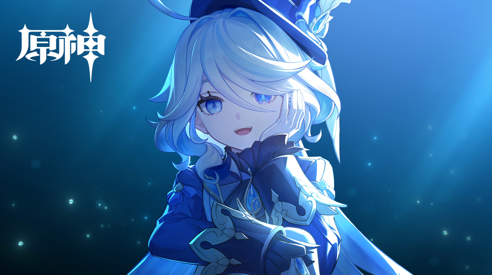

▸罪人的独白
五百年的时光，我站在舞台之上，既是演员，亦是观众。
当帷幕落下的那一刻，我终于明白——
原来神与人的距离，不过是一滴眼泪的重量。
当帷幕落下的那一刻，我终于明白——
原来神与人的距离，不过是一滴眼泪的重量。
▸《罪人舞步旋》前后的蜕变
舞旋之前：神明的孤独
在那场决定性的审判之前，芙宁娜以水神之姿统治枫丹五百年。她是舞台上的绝对主角，是法庭上不容置疑的审判者，是民众心中永恒的偶像。然而，这份荣耀的背后，是无人知晓的孤独。作为芙卡洛斯创造的"容器"，她必须时刻维持完美的神性形象，将真实的情感深埋心底。
她的每一个微笑都是表演，每一次发言都是台词。在那华丽的外壳之下，是对"真实"的深切渴望——渴望被理解，渴望被爱，渴望仅仅作为"芙宁娜"而非"水神"而存在。
舞旋之后：凡人的觉醒
当预言的终章落幕，当水神的权柄归还，芙宁娜终于卸去了神性的枷锁。那一刻，她不再是万众瞩目的神明，而是一个普通的女孩——会流泪，会饥饿，会为一碗热腾腾的浓汤而感动。
这份转变带来的不仅是自由，更是对"自我"的重新认知。她开始学习作为普通人生活：排队购买喜爱的点心，在歌剧院中欣赏他人的演出，甚至会为一场精彩的戏剧而鼓掌欢呼。从"被注视者"到"注视者"，她终于找到了属于自己的人生舞台。
▸五百年羁绊：芙卡洛斯与芙宁娜
在长达五个世纪的岁月中，水神芙卡洛斯与她创造的人类容器芙宁娜之间，形成了一种超越主仆、近乎共生的复杂关系。以下是她们羁绊的时间轴：
约500年前
诞生
为应对预言，芙卡洛斯将神格一分为二：本体沉入原始胎海，创造出人类形态的芙宁娜作为"舞台上的神明"，代行水神职责。
为应对预言，芙卡洛斯将神格一分为二：本体沉入原始胎海，创造出人类形态的芙宁娜作为"舞台上的神明"，代行水神职责。
五百年间
共生
芙宁娜以水神身份统治枫丹，而芙卡洛斯在胎海中注视一切。两人共享记忆与情感，芙宁娜的每一次喜怒哀乐，都牵动着本体的心神。
芙宁娜以水神身份统治枫丹，而芙卡洛斯在胎海中注视一切。两人共享记忆与情感，芙宁娜的每一次喜怒哀乐，都牵动着本体的心神。
4.2版本
诀别
在《罪人舞步旋》的高潮，芙卡洛斯献出自己的神核，完成对预言的改写。这一刻，芙宁娜第一次真正意义上地"独自"存在。
在《罪人舞步旋》的高潮，芙卡洛斯献出自己的神核，完成对预言的改写。这一刻，芙宁娜第一次真正意义上地"独自"存在。
5.0之后
新生
芙宁娜继承了芙卡洛斯的意志，作为普通人类继续生活在枫丹。她们的羁绊并未终结，而是以另一种形式延续——在芙宁娜的每一个选择中，都有芙卡洛斯的影子。
芙宁娜继承了芙卡洛斯的意志，作为普通人类继续生活在枫丹。她们的羁绊并未终结，而是以另一种形式延续——在芙宁娜的每一个选择中，都有芙卡洛斯的影子。
▸卸任之后：平凡中的幸福

卸任大法官之职后，芙宁娜终于过上了她向往已久的平凡生活。
清晨，她会像普通市民一样，步行前往枫丹廷的早市，在熟悉的摊位前排队购买刚出炉的可颂面包，配上一杯热气腾腾的咖啡。
午后，她常常独自坐在塞纳河畔的长椅上，静静地看着波光粼粼的水面，或是阅读一本喜爱的剧本。偶尔，她会被认出来，但人们只是微笑着点头致意，给予她应有的私人空间。
傍晚是她最期待的时刻。她会换上便装，悄悄来到歌剧院，坐在观众席的角落，欣赏新一代演员的表演。当幕布落下，她会像普通观众一样起立鼓掌，眼中闪烁着对艺术纯粹的热爱。
这份平凡，正是她五百年梦寐以求的珍宝。
曾经，我以为神明的职责就是完美地扮演神明。
如今，我终于懂得——
真正的自由，是能够坦然地做自己。
如今，我终于懂得——
真正的自由，是能够坦然地做自己。